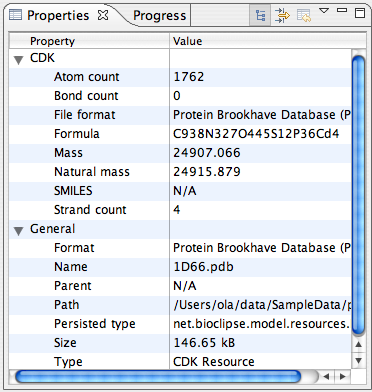
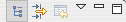

The Properties View

The Properties View is used to display properties of the currently selected object in a
key -> value way. It can contain groupings into categories, e.g. into Basic and Advanced properties.
Some properties may be edited, but most are read-only.
Menu additions
There are no menu additions for the Properties View.
local Toolbar

Actions from left to right:
- Show categories - Toggle display of categories
- Show advanced properties - Toggle display of advanced properties
- Restore default value - If editing is enabled, restore to default value